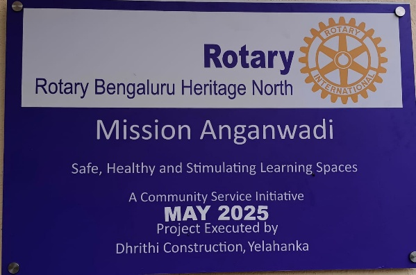
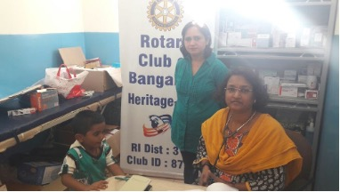
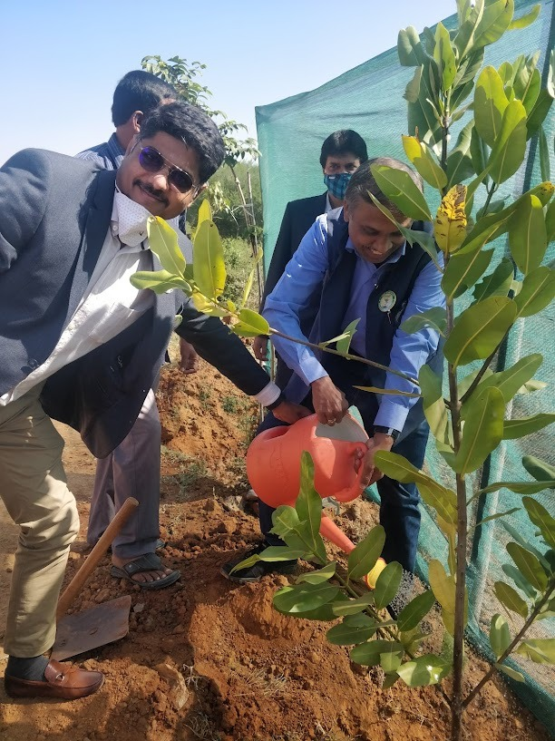
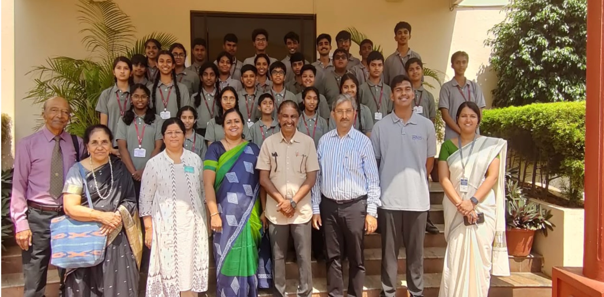
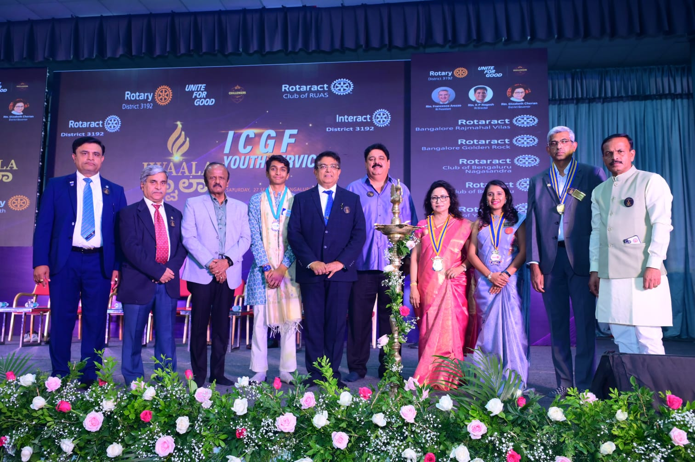

Highlights
Glimpses of a Decade
10
Years of Service
500+
Projects Completed
100000+
Lives Touched

Education
Supporting 10+ schools with infrastructure, scholarships, and educational materials to empower young minds

Health and Wellness
Free medical camps, charitable dispensaries, and health - physical and mental- awareness programs serving the community

Environment
Tree plantation drives, lake rejuvenation awareness, and sustainable community development projects

Engage with the Youth
Work with the youth, support, guide and motivate them to be good citizens and proud professionals

District Collaboration
Active participation in district-wide projects and initiatives across RID 3192 (and 3190 earlier) for greater reach and impact

Member Engagement
Members connnecting with each other to build stronger bonds and sow the seeds of greater service
Rotary Bengaluru Heritage North has been active in every avenue of service. We have created projects that have lasting impact and every member, present and past, has played a part in our success through their passion and perseverance. This souvenir captures vignettes of transformation, leadership, and hope over a decade of service.